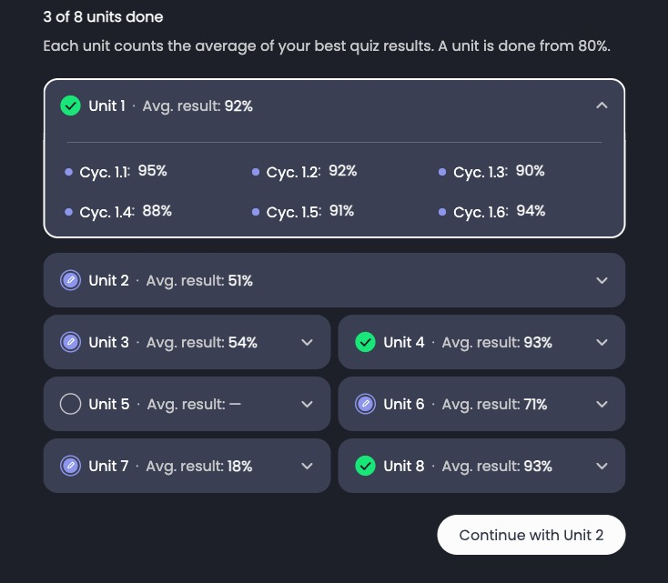
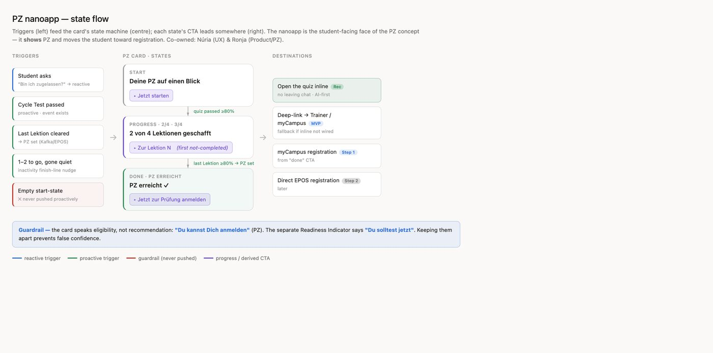

IU International University · Syntea · 2026 · UX Lead
Exam admission: “you can” is not “you should”
To be admitted to an exam, students had to leave Syntea and pass a separate test elsewhere. Preparation and admission did not know about each other.

The problem
For the people using it
“You’re asked for your exam date, but I never see: am I on track or behind?” Students did not always know what admission was, and the ones who did had to go somewhere else to get it.
For the business
Every extra step between preparation and registration costs time to exam. A trust-sensitive automated decision needed to be right before it could be fast.
Project detail
How I worked
Separate two things the team kept merging
Eligibility (you can register) and readiness (you should). Blurring them creates false confidence, so each got its own signal and its own wording: “Du kannst” versus “Du solltest”.

Specify the flow with product
One next step per state. Rules for when the product speaks first and when it waits. An empty state that is never pushed on anyone. The nano-app renders the facts; the assistant generates the framing.
Ask students before building
22 answered a short survey. Two thirds wanted it. The top value and the top worry were the same thing: whether the result can be explained, and whether it could be wrong. Explainability became scope, not polish.
Prototype, then build it properly
Status card first in Figma Make, then hand-built: four and ten units, light and dark, mobile and desktop, with accessibility fixes applied before review.

Measure demand with a fake door
A splash screen to a pilot group before the full feature. “No interest” opens a why-not question, so a no is data too.
What it changed
What I took from it
Copy became the source of truth for how the assistant talks about admission; code follows the copy, not the other way round. That order is a design decision.